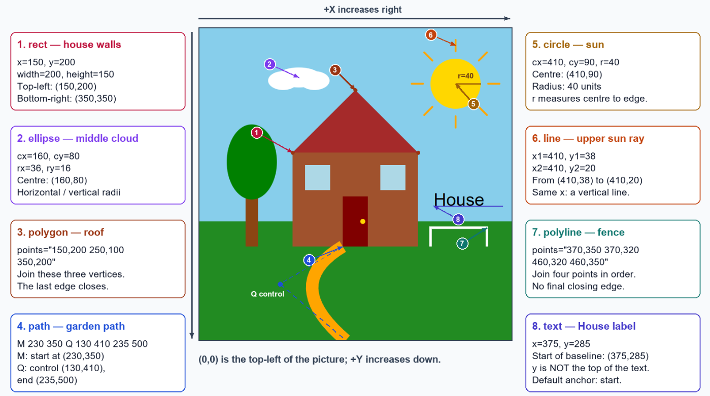
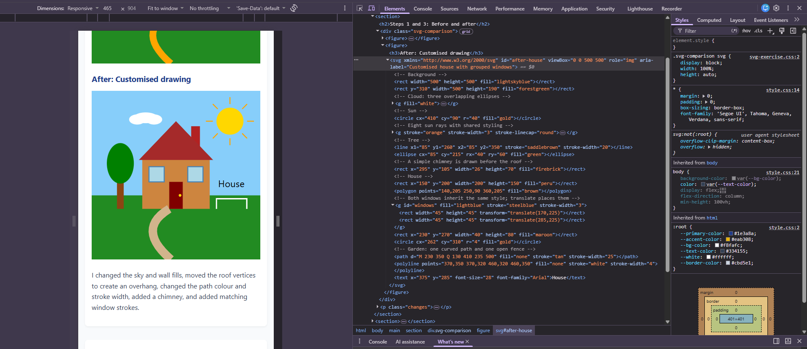

Exercise 4.1: Draw SVGs
A house and garden built from eight SVG elements: rect, circle, ellipse, line, polygon, polyline, path and text.
Steps 1 and 3: Before and after
Before: Original drawing
After: Customised drawing
I changed the sky and wall fills, moved the roof vertices to create an overhang, changed the path colour and stroke width, added a chimney, and added matching window strokes.
Step 2: Annotated screenshot
SVG coordinates start at (0,0) in the top-left. X increases rightwards; Y increases downwards. Both drawings use a 500 × 500 viewBox.

Group Element
My browser's Elements panel showing the customised SVG

In the after drawing, <g id="windows"> applies the same fill, stroke and stroke width to both rectangles. Each rectangle starts at local (0,0) and is 45 units wide and high.
translate(170,225) positions the left window at (170,225). translate(285,225) positions the right window at (285,225). Changing the parent group's styling changes both windows together.